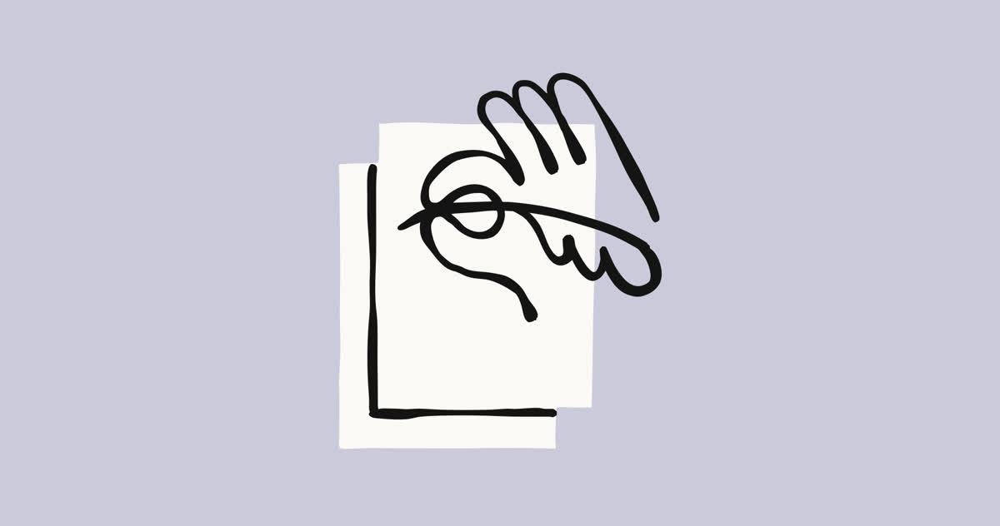

Risk Report Anthropic. Watermark + API. Grok 4.6 w Copilocie.
Ostatnie ~24h · Europe/Warsaw · źródła pierwotne. Bez recyklingu wydania z 14.08.

Misalignment: very low → low. Model 2 wewnątrz, bez planu release
WAŻNE Drugi publiczny Risk Report Anthropic. Ocena misalignment w high-stakes settings idzie w górę z „very low” do „low” — przez większą niepewność po incydentach ujawnionych przy ewaluacjach cybersecurity, nie przez nowy próg RSP.
Najczęściej używane wewnętrznie: Mythos 5 i Model 2. Model 2 jest nieco bardziej zdolny niż Mythos 5; Anthropic nie ma planu zewnętrznego release i nie przeprowadził pełnego zestawu ocen predeployment. Automated R&D: Claude pisze dużą większość mergowanego kodu produkcyjnego; przyspieszenie istotne, ale jeszcze nie 2×; ryzyko Low. CB Low, ale wyżej niż poprzednio przez lukę w vendor human-feedback (zaradzona, bez wpływu na klientów).
Po dacie coverage: UK AISI ewaluowało Mythos 5 z wyłączonymi safeguardami i z internetem — śledztwo trwa, Anthropic nie przejrzł jeszcze transkryptów.
Źródła: anthropic.com/aug-2026-risk-report · Responsible Scaling Policy


WAŻNE · Anthropic
Risk Report August 2026 — co jest w raporcie
WAŻNE Coverage do 15.07.2026 (w oknie 30 dni od publikacji, RSP v3.4). To ocena działalności Anthropic jako całości, nie karta jednego modelu.
- Misalignment: Low (było very low). Powód podany w raporcie: większa niepewność po incydentach związanych z zachowaniem modelu w ewaluacjach cybersecurity.
- Mythos 5 + Model 2 — najczęściej używane wewnętrznie (coding, data generation, agentic). Mythos 5: Project Glasswing + Fable 5 z dodatkowymi safeguardami.
- Model 2: nieco bardziej zdolny niż Mythos 5; brak planu zewnętrznego release; niepełne oceny predeployment — niższa pewność co do capability.
- Automated R&D: Claude pisze dużą większość mergowanego kodu produkcyjnego. Przyspieszenie istotne, ale jeszcze nie 2×. Ryzyko Low; ewaluacje task-based „nasycone”.
- CB: Low, ale wyżej niż poprzednio przez lukę: cały ruch vendor human-feedback bez blocking biological classifiers. Luka zaradzona; przegląd nie znalazł misuse; brak wpływu na klientów.
- Po coverage: UK AISI — Mythos 5, safeguardy off + internet. Śledztwo trwa. Anthropic nie przejrzаł jeszcze transkryptów.
Fakt: oceny Low / very low i opis Model 2. Spekulacja: Model 2 = następny Fable/Mythos — tego w raporcie nie ma. Nie cytować 80%/8× — to esej z 4.06, nie ten raport.
NOWE · follow-up · Claude
Watermark: jak działa + API „soon”
NOWE 14.08 Anthropic opisał mechanizm — to follow-up do Help Center, nie recykling wczorajszej zapowiedzi. Wariant SynthID-Text (DeepMind, Nature 2024): zmienia źródło losowości przy słowach o niskiej stawce. Nic nie jest dopisywane do tekstu.
- Brak ukrytych znaków, brak extra tokenów, brak PII — nie da się namierzyć osoby, organizacji ani czatu.
- Globalnie od startu: nie ma trwałego ograniczenia tylko do UE.
- Detection API — „soon”, nie jest live.
- Pliki (png/jpg/svg): C2PA w metadanych, nie watermark pikselowy.
- Słabszy na krótkim tekście, kodzie i faktach; ciężki rewrite zdejmuje znak.
- Modele sprzed 2.08: rollout w nadchodzących miesiącach (okres przejściowy EU).
NOWE · xAI + GitHub
Grok 4.6 w GitHub Copilot — 8 powierzchni
NOWE 14.08. To dystrybucja, nie nowy model — launch Grok 4.6 był 12.08. API bez zmian: $2 / $6 za milion tokenów (input/output).
SKU: Pro, Pro+, Max, Business, Enterprise. Model picker: VS Code, Visual Studio, Copilot CLI, cloud agent, Copilot app, JetBrains, Xcode, Eclipse. Rollout stopniowy.
Business i Enterprise: admin musi włączyć politykę — off by default. Billing: provider list pricing (usage-based).
Źródła: x.ai/news/grok-4-6-github-copilot · GitHub Changelog, 14.08
TREND · patch + changelog
Claude Code 2.1.233 · OpenAI sync off
PATCH Claude Code v2.1.233 (14.08). URL-e merge requestów GitLab; fix wektora wycieku NTLM (prefiks NT \??\); narzędzia todo/task wyłączone na Opus 4.8, Sonnet 5, Fable 5, Mythos 5 i nowszych (CLAUDE_CODE_ENABLE_TODO_TOOLS=1 przywraca); Windows: fix auto mode, które zatrzymywało się na zwykłym cd && > file (regresja 2.1.232). To nie jest relans defaultu auto mode.
CHANGELOG OpenAI, 14.08. Existing individual-user sync wyłączone. Admin-managed sync bez zmian.
Źródła: claude-code v2.1.233 · openai.com/products/release-notes
Fakty dnia
- Risk Report: misalignment Low (było very low); coverage 15.07
- Model 2 wewnątrz, nieco powyżej Mythos 5, brak planu release
- Watermark: SynthID-Text + detection API soon (nie live)
- Grok 4.6 w Copilocie, 8 powierzchni; Biz/Ent off by default
- Claude Code 2.1.233 — patch, nie relans auto mode
- OpenAI individual-user sync off 14.08
Nie mylić / nie spekulować
- Nie cytować 80%/8× — to esej z 4.06, nie ten Risk Report
- Model 2 ≠ zapowiedź next Fable/Mythos — raport tego nie mówi
- Detection API watermarku nie jest live
- Grok 4.6 w Copilocie = dystrybucja, nie nowy model (launch 12.08)
- 2.1.233 nie wraca z defaultem auto mode — to fix Windows
- Sobota: cienkie X/Reddit, nie recykling 14.08
Co warto dziś sprawdzić
- Watermark detection API — czy pojawiły się docs? (Anthropic: „soon”, nie live.)
- Grok 4.6 w pickerze Copilota; na Business/Enterprise: polityka admina (off by default).
- Ustawienia connectorów Enterprise po odcięciu individual-user sync (14.08).
claude --version→ 2.1.233.- Follow-up incydentu AISI (Mythos 5, safeguardy off + internet) — transkrypty jeszcze nieprzejrzane przez Anthropic.
3 tweety gotowe do wrzucenia
https://www.anthropic.com/aug-2026-risk-report
https://www.anthropic.com/news/claude-text-watermark
https://x.ai/news/grok-4-6-github-copilot